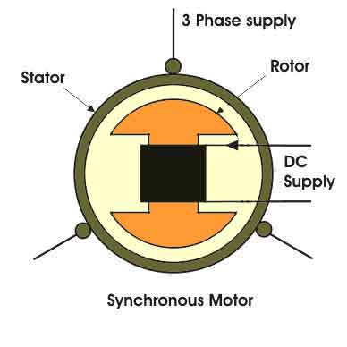

• Main Features
• Principle of Operation
• Methods of Starting
• Application
Electrical motor in general is an electro-mechanical device that converts energy from electrical domain to mechanical domain. Based on the type of input we have classified it into single phase and 3 phase motors. Among 3 phase induction motors and synchronous motors are more widely used.
When a 3 phase electric conductors are placed in a certain geometrical positions (In certain angle from one another) there is an electrical field generate. Now the rotating magnetic field rotates at a certain speed, that speed is called synchronous speed. Now if an electromagnet is present in this rotating magnetic field, the electromagnet is magnetically locked with this rotating magnetic field and rotates with same speed of rotating field. Synchronous motors is called so because the speed of the rotor of this motor is same as the rotating magnetic field. It is basically a fixed speed motor because it has only one speed, which is synchronous speed and therefore no intermediate speed is there or in other words it’s in synchronism with the supply frequency. Synchronous speed is given by
Construction of Synchronous Motor
Normally it's construction is almost similar to that of a 3 phase induction motor, except the fact that the rotor is given dc supply, the reason of which is explained later. Now, let us first go through the basic construction of this type of motor

From the above picture, it is clear that how this type of motors are designed. The stator is given is given three phase supply and the rotor is given dc supply.
Main Features of Synchronous Motors
- Synchronous motors are inherently not self starting. They require some external means to bring their speed close to synchronous speed to before they are synchronized.
- The speed of operation of is in synchronism with the supply frequency and hence for constant supply frequency they behave as constant speed motor irrespective of load condition
- This motor has the unique characteristics of operating under any electrical power factor. This makes it being used in electrical power factor improvement.
Principle of Operation Synchronous Motor
Synchronous motor is a doubly excited machine i.e two electrical inputs are provided to it. It’s stator winding which consists of a 3 phase winding is provided with 3 phase supply and rotor is provided with DC supply. The 3 phase stator winding carrying 3 phase currents produces 3 phase rotating magnetic flux. The rotor carrying DC supply also produces a constant flux. Considering the frequency to be 50 Hz, from the above relation we can see that the 3 phase rotating flux rotates about 3000 revolution in 1 min or 50 revolutions in 1 sec. At a particular instant rotor and stator poles might be of same polarity (N-N or S-S) causing repulsive force on rotor and the very next second it will be N-S causing attractive force. But due to inertia of the rotor, it is unable to rotate in any direction due to attractive or repulsive force and remain in standstill condition. Hence it is not self starting.
To overcome this inertia, rotor is initially fed some mechanical input which rotates it in same direction as magnetic field to a speed very close to synchronous speed. After some time magnetic locking occurs and the synchronous motor rotates in synchronism with the frequency.
Methods of Starting of Synchronous Motor
- Synchronous motors are mechanically coupled with another motor. It could be either 3 phase induction motor or DC shunt motor. DC excitation is not fed initially. It is rotated at speed very close to its synchronous speed and after that DC excitation is given. After some time when magnetic locking takes place supply to the external motor is cut off.
- Damper winding : In case, synchronous motor is of salient pole type, additional winding is placed in rotor pole face. Initially when rotor is standstill, relative speed between damper winding and rotating air gap flux in large and an emf is induced in it which produces the required starting torque. As speed approaches synchronous speed , emf and torque is reduced and finally when magnetic locking takes place, torque also reduces to zero. Hence in this case synchronous is first run as three phase induction motor using additional winding and finally it is synchronized with the frequency.
Application of Synchronous Motor
- Synchronous motor having no load connected to its shaft is used for power factor improvement. Owing to its characteristics to behave at any electrical power factor, it is used in power system in situations where static capacitors are expensive.
- Synchronous motor finds application where operating speed is less (around 500 rpm) and high power is required. For power requirement from 35 kW to 2500 KW, the size, weight and cost of the corresponding three phase induction motor is very high. Hence these motors are preferably used. Ex- Reciprocating pump, compressor, rolling mills etc.
 by
by {kind=link}